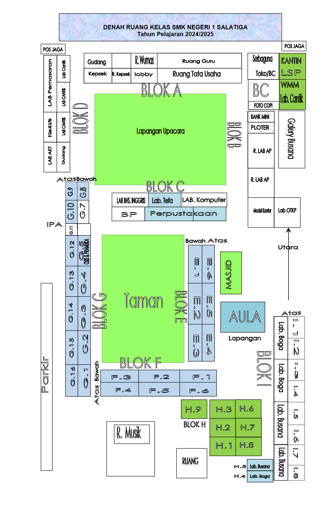

Pilih Lokasi Eksplorasi
Klik salah satu lokasi pada denah.

Temukan matematika di lingkungan sekolahmu.
Amati. Ukur. Diskusikan. Temukan.
Klik salah satu lokasi pada denah.

Mengidentifikasi bangun datar yang terdapat pada area masjid.
Mengumpulkan data melalui observasi kemudian mengolah data tersebut.
Mengidentifikasi bentuk lapangan dan melakukan pengukuran.
Mengumpulkan data hasil observasi di lingkungan lapangan.